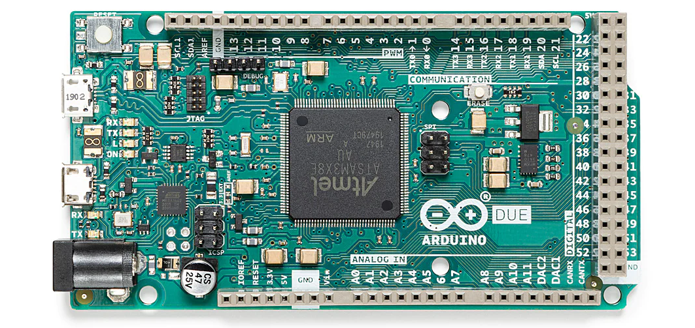
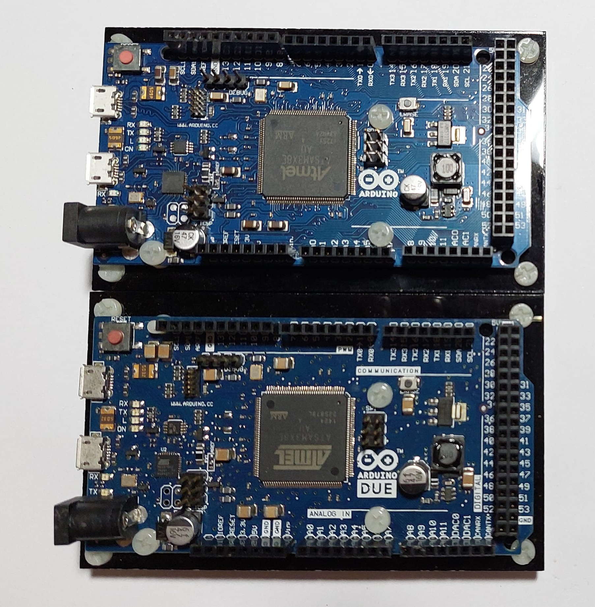
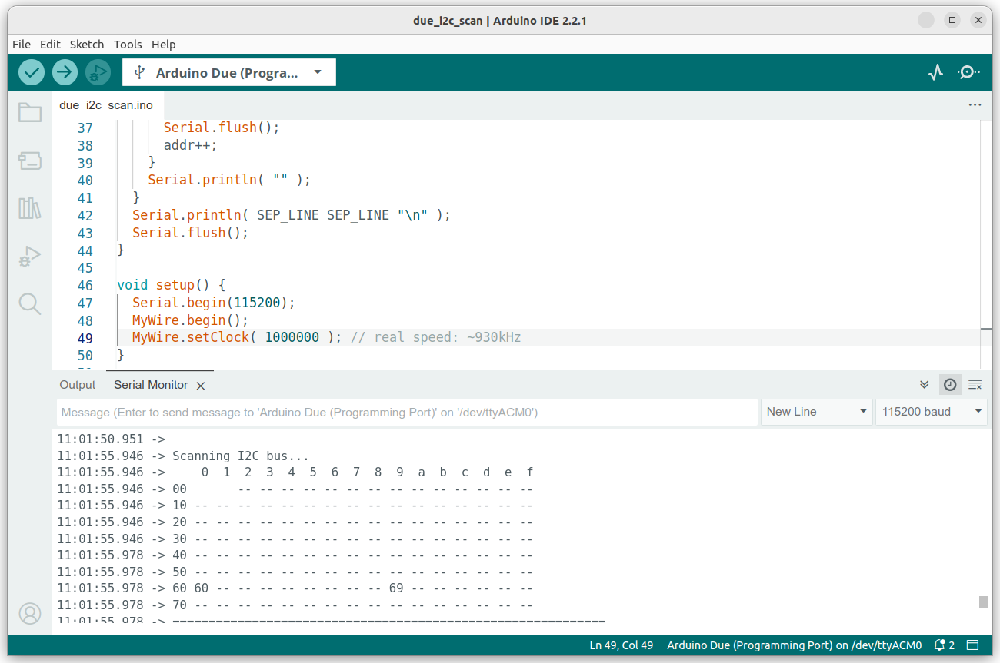
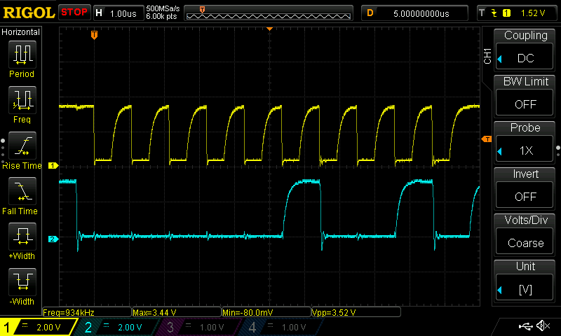
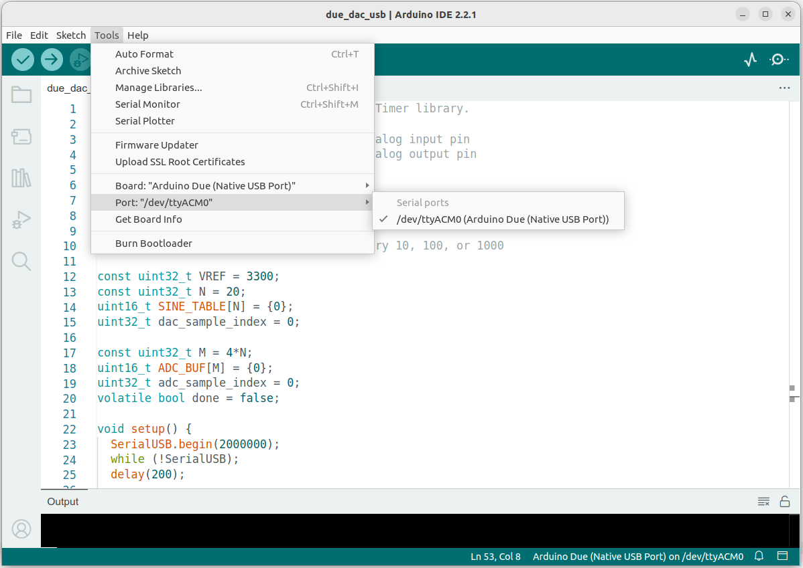
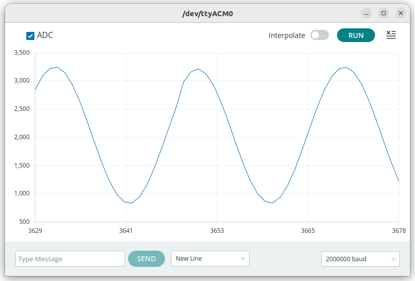
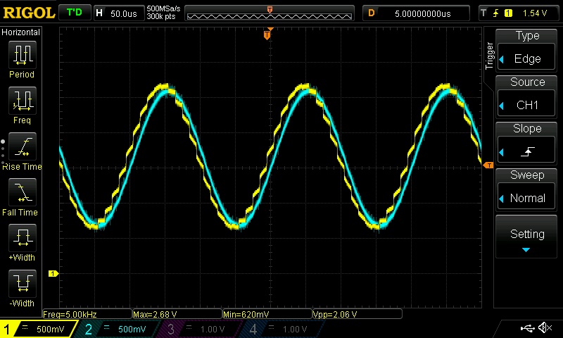

การใช้งานบอร์ด Arduino Due Rev.3#
▷ แนะนำบอร์ด Arduino Due Rev.3#
บอร์ด Arduino Due Rev.3 และการเรียนรู้การเขียนโปรแกรมไมโครคอนโทรลเลอร์ 32 บิต
- บอร์ด Due เริ่มมีการใช้งานตั้งแต่ปีค.ศ. 2012 แต่ยังมีการจำหน่ายโดย Arduino.cc
- บอร์ด Due ใช้ตัวประมวลผลขนาด 32 บิต (ARM Cortex-M3) ความเร็วสูงสุด 84 MHz แต่ไม่มี FPU (Floating-point Unit)
- ชิปทำงานด้วยแรงดันไฟเลี้ยง 3.3V (I/O Voltage)
- ภายในมีหน่วยความจำ Flash สำหรับ Program Memory ขนาด 512 KB (2 x 256 KB) และ SRAM สำหรับ Data Memory ขนาด 96 KB
- มีวงจรในส่วนที่เรียกว่า Memory Protection Unit (MPU) เหมาะสำหรับการทำงานที่ใช้ระบบปฏิบัติการเวลาจริง (RTOS) เช่น FreeRTOS (open source)
- ชิปมีขา I/O จำนวนมาก (ตัวถังแบบ 144-pin LQFP) และบอร์ดมีขนาด หรือ Form Factor เท่ากับ Arduino Mega 2560
- มีวงจรภายใน (On-chip Peripherals) ต่าง ๆ หลายชนิดที่มักพบเห็นได้ในไมโครคอนโทรลเลอร์ประเภท
- ภายในชิปมี BootROM ขนาด 16KB รองรับการเชื่อมต่อด้วย UART และ USB
- อัปโหลดโปรแกรมได้ โดยใช้ JTAG/SWD หรือ ผ่าน USB / Serial (SAM-BA bootloader / BOSSA)
- สามารถเขียนโปรแกรมได้ในภาษา C/C++ โดยใช้โปรแกรมอย่างเช่น Arduino IDE (open source) หรือ Microchip Studio IDE หรือซอฟต์แวร์อื่น ๆ (ใช้ร่วมกับ GCC-ARM Toolchain)
- บอร์ด Due มีคอนเนกเตอร์แบบ MicroUSB จำนวน 2 ชุด จำแนกเป็น
- USB1 (อยู่ใกล้ปุ่มรีเซต): Native USB Port สำหรับการใช้งาน USB-CDC (ใช้ค่า Baudrate ได้สูงถึง 2,000,000) หรือ USB HID หรือ USB Host
- USB2: Programming Port ซึ่งเชื่อมต่อผ่านชิปไมโครคอนโทรลเลอร์ ATmega32U2 ซึ่งทำหน้าที่เป็น USB-to-Serial Bridge ให้กับชิป ATSAM3x8e
- มีวงจร Crystal Oscillator ความถี่ 12MHz และ 32.768kHz
- ปุ่ม Erase เมื่อกดปุ่มแล้ว หน่วยความจำแฟลชของ ATSAM3X8E จะถูกลบทั้งหมด (จะถูกเขียนทับด้วยข้อมูลที่มีค่า 0xFF ในทุกแอดเดรสของหน่วยความจำ)
- ถ้ามีการเชื่อมต่อผ่าน Serial ด้วย Baudrate เท่ากับ 1200 เฟิร์มแวร์ Atmel SAM-BA Bootloader จะทำงานอัตโนมัติ และลบข้อมูลหน่วยความจำแฟลช (ให้ผลเหมือนการปุ่ม Erase) ก่อนการอัปโหลด Arduino Sketch ทุกครั้ง
- ใช้ไฟเลี้ยงจากพอร์ต USB (5V) และมี Polyfuse ขนาด 500mA ป้องกันการใช้กระแสเกิน
- ขา VIN รับแรงดันอินพุต DC ได้ในช่วง 7-12V
- ขา 3.3V จ่ายกระแสสูงสุดได้ 800 mA (ใช้ไอซีควบคุมแรงดัน NCP1117ST-3.3V)
- ขา 5V จ่ายกระแสสูงสุดได้ 800 mA (ใช้ไอซีควบคุมแรงดัน LM2732 Switching Regulator)
- สามารถเลือกใช้บอร์ด Arduino Due (Clone) ที่มีการผลิตจากจีน มีราคาถูกกว่า
คำเตือน:
- ในการใช้งาน DAC0 และ DAC1 เพื่อสร้างสัญญาณแอนะล็อก-เอาต์พุต แนะนำให้ต่อตัวต้านทานอนุกรม มีค่าอย่างน้อย 1.2k โอห์ม ที่ขาดังกล่าว ก่อนนำไปใช้เป็นเอาต์พุต เพื่อป้องกันการจ่ายกระแสเกิน ซึ่งจะทำให้วงจรภาคเอาต์พุตของ DAC ภายในชิป SAM3X8E ชำรุดเสียหายได้
- ขา DAC0 และ DAC1 เมื่อใช้เป็นขาแอนะล็อก-เอาต์พุต จะมีแรงดันไฟฟ้าอยู่ในช่วง 0.55V ถึง 2.75V เท่านั้น (ไม่ใช่ Rail-to-Rail ระหว่าง 0V กับ 3.3V) ถ้าคำนวณความละเอียด (12-bit DAC) ก็จะได้ จะได้ประมาณ
- ขา Digital I/O ของ ATSAM3X8E จะใช้กับกระแสได้น้อยกว่า บอร์ด Arduino Uno เช่น กระแส Sink / Source (สูงสุด) ของแต่ละขา มีระดับไม่เท่ากัน ให้ศึกษารายละเอียดได้จากตารางในหน้าเว็บ "SAM3X-Arduino Pin Mapping"
- บอร์ดรุ่นใหม่ จะมีแผ่น PCB เป็นสีเขียว แต่ถ้าเป็นรุ่นเก่า จะเป็นสีน้ำเงิน

รูป: บอร์ด Arduino Due R3 (Source: arduino.cc)

รูป: บอร์ด Arduino Due (Clone)
รูป: แผนผังแสดงตำแหน่งขา (บางส่วน) หรือดูจากไฟล์ PinOut ของบอร์ด Arduino Due R3 (Source: Arduino.cc)
{kind=link}
รูป: ผังวงจร Schematic
แม้ว่าบอร์ด Arduino Due Rev.3 เป็นบอร์ดไมโครคอนโทรลเลอร์ที่มีมานานแล้ว อย่างน้อย 10 ปีขึ้นไป (หรืออาจจะเรียกได้ว่าเป็น Legacy MCU Board) และอาจจะไม่ได้รับความสนใจมากนัก เนื่องจากในปัจจุบันมีชิปและบอร์ดไมโครคอนโทรลเลอร์ออกมาให้เลือกอีกจำนวนมาก จุดเด่นของบอร์ด Due เช่น จำนวนขา I/O และ ขนาดหน่วยความจำ SRAM และ Flash เป็นต้น
ข้อมูลเชิงเทคนิคเกี่ยวกับ Atmel SAM3X8E MCU
- CPU: 32-bit ARM Cortex-M3 CPU @84MHz
- IC Package: 144-lead LQFP
- On-chip SRAM: 96 KB
- On-chip Flash: 512 KB (2 x 256 KB)
- Core Voltage: 1.62V ~ 1.95V
- I/O Voltage: 3.3V (not 5V tolerant !!!)
- I/O: 103 I/O lines
- On-chip Peripherals
- 4x UART (Hardware Serials)
- 2x TWI (Two-Wire Interface) / I2C Controllers
- 6x SPI (Serial Peripheral Interface) Controllers
- 1x SSC (Synchronous Serial Controller) / I2S Controller
- 9x 32-bit Timer/Counter (TC) Units
- 16-bit PWM (Pulse Width Modulation) Outputs (8 channels: PWMHx & PWMLx)
- 1x Static Memory Controller (SMC)
- 1x NAND Flash Controller (NFC)
- 1x SDRAM Controller (SDRAMC)
- 1x High Speed Multimedia Card Interface (HSMCI)
- 1x Fast Flash Programming Interface (FFPI)
- 6x 32-bit Parallel I/O (PIO) Controllers
- 1x 12-bit 1Msps ADC (16 channels)
- 1x 12-bit 1Mbps DAC (2 channels)
- 1x 10/100 Ethernet MAC
- 1x USB 2.0 OTG (Host / Device)
- 2x CAN (Controller Area Network) Controllers
- 1x TNRG (True Random Number Generator)
- Programming & Debug Support: JTAG / SWD
▷ การเขียนโปรแกรมด้วย Arduino IDE#
การเขียนโปรแกรม Arduino Sketch ด้วยซอฟต์แวร์ Arduino IDE 2.x
จะต้องมีการติดตั้ง ArduinoCore-sam
(Arduino Code for SAM / Arm Cortex-M3) เวอร์ชันล่าสุด v1.16.12
รูป: การติดตั้ง Boards Manager - Arduino SAM Boards (32-bit Arm Cortex-M3)

รูป: การตั้งค่าใน Arduino IDE v2.x สำหรับการใช้บอร์ด Arduino Due
▷ การใช้งาน LED + Push Button + External Interrupt#
โค้ดตัวอย่างนี้สาธิตการใช้งานขา GPIO เป็นขาดิจิทัล-อินพุต และมีการเปิดใช้งาน External Interrupt และ Internal Pullup เมื่อนำไปต่อกับปุ่มกด Push Button (ต่อวงจรปุ่มกดบนเบรดบอร์ด) และมีการกดปุ่มแล้วปล่อยในแต่ละครั้ง จะทำให้เกิดอินเทอร์รัพท์ที่ขาดังกล่าว
เมื่อเกิดเหตุการณ์กดปุ่มแล้วปล่อย (การเปลี่ยนสถานะลอจิกในลักษณะ "ขอบขาขึ้น" หรือ RISING) ก็จะทำให้ฟังก์ชัน ISR ทำงาน และมีหน้าที่สลับสถานะลอจิกที่ขาเอาต์พุตหนึ่งครั้ง (ขาตรงกับ LED บนบอร์ด)
ข้อสังเกต: การเลือกใช้ขา GPIO สำหรับ External Interrupt เลือกใช้ขาดิจิทัลใดก็ได้
const int BTN_PIN = 33; // Button input pin
const int LED_PIN = LED_BUILTIN; // Onboard LED pin
volatile bool ledState = LOW;
volatile uint32_t ts_last_update = 0;
void setup() {
Serial.begin(115200);
pinMode(LED_PIN, OUTPUT);
pinMode(BTN_PIN, INPUT_PULLUP);
attachInterrupt( digitalPinToInterrupt(BTN_PIN), [](){
uint32_t ts_now = millis();
if ( ts_now - ts_last_update >= 20 ) {
ts_last_update = ts_now;
ledState = !ledState; // Toggle the LED state.
digitalWrite(LED_PIN, ledState); // Update the LED.
}
}, RISING);
}
void loop() {
static uint32_t state = LOW;
if (ledState != state) { // Detect state change.
state = ledState;
String str = "LED: ";
str += state;
Serial.println(str.c_str());
}
}
▷ การใช้งานขา Digital I/O: 8x LED Bar#
โค้ดตัวอย่างนี้สาธิตการใช้งานขา Digital I/O จำนวน 8 ขา และใช้เพื่อกำหนดสถานะลอจิกของ LED Bar จำนวน 8 ดวง (ทำงานแบบ Active-High) LED จะมีเพียงหนึ่งดวงที่อยู่ในสถานะ ON และจะเลื่อนไปตำแหน่งถัดไป แล้วย้อนไปมาตามลำดับ
const int LED_PINS[] = {53,51,49,47,45,43,41,39};
const int NUM_LEDS = sizeof(LED_PINS)/sizeof(int);
const int INTERVAL_MS = 25;
void setup() {
for (int i=0; i < NUM_LEDS; i++) {
pinMode( LED_PINS[i], OUTPUT );
digitalWrite( LED_PINS[i], LOW );
}
}
void loop() {
static int index = 2*NUM_LEDS-1;
static uint32_t ts_saved = 0;
uint32_t ts_now = millis();
if ( ts_now - ts_saved >= INTERVAL_MS ) {
ts_saved = ts_now;
index = (index+1) % (2*NUM_LEDS);
for (int i=0; i < NUM_LEDS; i++) {
int j;
if ( index >= NUM_LEDS ) {
j = (2*NUM_LEDS-1)-index;
} else {
j = index;
}
digitalWrite( LED_PINS[i], (i==j) ? HIGH : LOW );
}
}
}
▷ การสร้างสัญญาณ PWM#
บอร์ด Arduino Due R3 มีขา D2 ~ D13 ให้ใช้งานเป็นขา PWM Output ได้
(สร้างสัญญาณโดยใช้วงจรภายใน เช่น Timer Counter หรือ PWM controller)
โค้ดตัวอย่างนี้สาธิตการใช้คำสั่ง analogWrite() เพื่อสร้างสัญญาณ PWM
จำนวน 3 ช่องสัญญาณ (เลือกใช้ขา D8, D9 และ D10)
แล้วนำไปใช้กับโมดูล RGB LED (active-low, common-anode)
#define ACTIVE_LOW
#ifdef ACTIVE_LOW
#define PWM_DC(x) (255-(x))
#else
#define PWM_DC(x) (x)
#endif
const int RGB_PINS[] = {8,10,9}; // R,G,B pins
const int DELAY_MS = 500; // delay time in msec.
const uint32_t COLORS[] = {
0xff0000, 0x00ff00, 0x0000ff, 0xffff00,
0xff00ff, 0x00ffff, 0xffffff, 0x000000
};
const uint8_t NUM_COLORS = sizeof(COLORS)/sizeof(uint32_t);
void setup() {
for (int i=0; i < 3; i++) {
pinMode( RGB_PINS[i], OUTPUT );
analogWrite( RGB_PINS[i], PWM_DC(0) );
}
}
void loop() {
// A static local variable used to keep the current color index.
static int index = 0;
uint32_t color = COLORS[ index ];
for ( int i=2; i >= 0; i-- ) {
analogWrite( RGB_PINS[i], PWM_DC(color & 0xff) );
color >>= 8;
}
delay( DELAY_MS );
index = (index+1) % NUM_COLORS;
}
รูป: ตัวอย่างการต่อวงจรทดลองใช้โมดูล RGB LED (โมดูลมีตัวต้านทานจำกัดกระแสสำหรับ LED)
▷ การใช้งาน ADC และ DAC#
โค้ดตัวอย่างนี้สาธิตการสร้างสัญญาณเอาต์พุตแบบแอนะล็อกโดยใช้วงจร DAC ภายในชิป และวัดแรงดันไฟฟ้าจากสัญญาณเอาต์พุตดังกล่าวโดยใช้วงจร ADC ภายในชิปเดียวกัน
ในตัวอย่างนี้ได้เลือกใช้ขา DAC1 เป็นขาเอาต์พุต และนำไปต่อผ่านตัวต้านทานแบบอนุกรมที่มีค่าอย่างน้อย 1k โอห์ม (!!! เพื่อป้องกันการจ่ายกระแสเกินและอาจทำให้วงจร DAC เสียหายได้ !!!) แล้วนำไปใช้เป็นสัญญาณอินพุต โดยต่อเข้าที่ขา A1 ค่าตัวเลขสำหรับนำไปใช้กับ DAC จะอยู่ในช่วง 0 ถึง 4095 (12 บิต) นอกจากนั้นแล้วยังมีการส่งข้อความเพื่อแสดงค่าตัวเลขสำหรับ DAC และค่าที่อ่านได้ ADC โดยมีการแปลงค่าแล้วให้มีหน่วยเป็น mV (milli-volts) เมื่อใช้แรงดันอ้างอิง VREF=3.3V แล้วแสดงข้อมูลที่ได้ในรูปแบบของกราฟด้วย Arduino Serial Plotter
const int ADC_PIN = A1; // Select an analog input pin
const int DAC_PIN = DAC1; // Select an analog output pin
// 12-bit resolution for both ADC & ADC
const uint32_t BIT_RESOLUTION = 12;
// Max value (2^12 - 1)
const uint32_t MAX_VALUE = (1<<BIT_RESOLUTION )-1;
void setup() {
Serial.begin(115200);
analogWriteResolution(BIT_RESOLUTION );
analogReadResolution(BIT_RESOLUTION );
analogWrite(DAC_PIN, MAX_VALUE/2 );
}
const uint32_t N = 8; // Number of voltage levels - 1
const uint32_t VREF = 3300;
void loop() {
for (uint32_t i=0; i <= N; i++ ) {
uint32_t dac_value = i*MAX_VALUE/N;
analogWrite( DAC_PIN, dac_value );
delay(5);
uint32_t adc_value = analogRead(ADC_PIN);
String str;
str = "DAC[mV]:";
str += dac_value*VREF/MAX_VALUE;
str += ",ADC[mV]:";
str += adc_value*VREF/MAX_VALUE;
Serial.println( str.c_str() );
}
}
รูป: กราฟแสดงค่า ADC และ DAC (ค่าสูงสุดที่วัดได้ประมาณ 2750 mV)

รูป: กราฟแสดงค่า ADC และ DAC (ค่าต่ำสุดที่วัดได้ประมาณ 535 mV)

รูป: กราฟแสดงค่า ADC และ DAC (ค่ากลางที่วัดได้ประมาณ 1650 mV ซึ่งเป็นตำแหน่งที่จุดตัดของกราฟของทั้งสองเส้น)
▷ การใช้งาน I2C#
โค้ดตัวอย่างนี้สาธิตการใช้งานบัส I2C โดยให้บอร์ด Arduino Due ทำงานในโหมด I2C Master และตรวจสอบดูว่า มีอุปกรณ์ที่ทำหน้าที่เป็น I2C Slave เชื่อมต่ออยู่หรือไม่ ถ้าพบก็ให้แสดงหมายเลขอุปกรณ์ (I2C Device Address)
บอร์ด Arduino Due มีพอร์ต I2C ให้ใช้งานอยู่ 2 พอร์ต คือ
Wire: ขาหมายเลข 20 (SDA) และ 21 (SCL)Wire1: ขาที่มีชื่อ SDA1 และ SCL1 เขียนกำกับไว้บนบอร์ด
#include <Wire.h>
// Wire : 20 (SDA), 21 (SCL) pins
// Wire1 : SDA1, SCL1 pins
#define MyWire Wire
#define SEP_LINE "=============================="
void i2c_scan() {
char sbuf[5];
int n_devices = 0;
Serial.println( "Scanning I2C bus..." );
Serial.print( " " );
for ( uint8_t col=0; col < 16; col++ ) {
snprintf( sbuf, 4, "%3x", col );
Serial.print( sbuf );
}
Serial.println( "" );
uint8_t addr=0;
for( uint8_t row=0; row < 8; row++ ) {
snprintf( sbuf, 3, "%02X", (row << 4) );
Serial.print( sbuf );
for ( uint8_t col=0; col < 16; col++ ) {
if ( row==0 && addr<=1 ) {
Serial.print(" ");
} else {
MyWire.beginTransmission( addr );
if ( MyWire.endTransmission()>0 ) {
Serial.print( " --" );
} else {
snprintf( sbuf, 4, " %02x", addr );
Serial.print( sbuf );
n_devices++;
}
}
Serial.flush();
addr++;
}
Serial.println( "" );
}
Serial.println( SEP_LINE SEP_LINE "\n" );
Serial.flush();
}
void setup() {
Serial.begin(115200);
MyWire.begin();
MyWire.setClock( 1000000 ); // real speed: ~930kHz
}
void loop() {
i2c_scan();
delay(5000);
}

รูป: ตัวอย่างข้อความเอาต์พุตที่ได้รับใน Arduino Serial Monitor
จากตัวอย่างข้อความจะเห็นได้ว่า มีการตรวจพบอุปกรณ์ที่ได้นำมาต่อเพิ่มกับบอร์ด Due
(ได้แก่ 0x60 และ 0x69)

รูป: การวัดสัญญาณ SCK ในระหว่างที่มีการทำงานของบัส I2C (ได้ทดลองตั้งค่าความถี่ของ SCK ของ I2C ไว้ที่ 1,000,000 Hz)
▷ การใช้ Hardware Timer#
ชิป ATSAM3X8E มีวงจรตัวนับตามเวลา Timer / Counter ให้เลือกใช้ได้
(Timer0 ~ Timer8) ในโค้ดนี้ได้มีการเลือกใช้ Timer3 เป็นตัวอย่าง
และสามารถเขียนโค้ดเพื่อใช้งานวงจร Timer โดยใช้ไลบรารีที่มีชื่อว่า
DueTimer
// https://github.com/ivanseidel/DueTimer
#include <DueTimer.h> // Includes the DueTimer library.
const int LED_PIN = 13;
bool led_state = false;
uint32_t count = 0;
void setup(){
pinMode(LED_PIN, OUTPUT);
digitalWrite(LED_PIN, LOW);
delay(1000);
Timer3.attachInterrupt( [](){ // Timer3 callback
// Toggle the LED
digitalWrite(LED_PIN, led_state ^= 1 );
if ( ++count >= 10 ) {
Timer3.stop(); // Stop the timer.
}
} );
Timer3.start(500000 /*usec*/); // Calls every 500ms
}
void loop() {
// empty
}
▷ การใช้งาน Hardware Timer + DAC + ADC#
โค้ดตัวอย่างนี้สาธิตการใช้งานวงจร Hardware Timer ได้แก่ Timer3 และ Timer4 และมีการสร้างฟังก์ชัน Callback เพื่อใช้กับวงจรตัวนับดังกล่าว และให้ทำงานตามช่วงเวลาที่กำหนดไว้ด้วยอัตราคงที่
Timer3 จะเรียกฟังก์ชัน Callback ที่เกี่ยวข้อง เพื่อสร้างสัญญาณเอาต์พุตด้วย DAC โดยใช้ข้อมูลในอาร์เรย์ที่ได้มีการคำนวณไว้ตามฟังก์ชันรูปคลื่นไซน์หนึ่งคาบ มีการกำหนดช่วงเวลาไว้ในการอัปเดตค่าเอาต์พุตในแต่ละครั้ง เช่น 10, 100, 1000 ไมโครวินาที
Timer4 จะเรียกฟังก์ชัน Callback ที่เกี่ยวข้อง เพื่อทำหน้าที่อ่านสัญญาณแอนะล็อกด้วย ADC จากวงจร DAC แล้วส่งเป็นข้อความผ่านทางพอร์ต USB (Native USB Port) ไปยังคอมพิวเตอร์ และนำไปแสดงรูปกราฟ
#include <DueTimer.h> // Includes the DueTimer library.
const int ADC_PIN = A1; // Select an analog input pin
const int DAC_PIN = DAC1; // Select an analog output pin
// 12-bit resolution for both ADC & ADC
const uint32_t BIT_RESOLUTION = 12;
// Max value (2^12 - 1)
const uint32_t MAX_VALUE = (1<<BIT_RESOLUTION )-1;
const uint32_t DAC_INTERVAL_US = 10; // try 10, 100, or 1000
// An array used to store pre-calculated sine-wave values.
const uint32_t N = 20;
uint16_t SINE_TABLE[N] = {0};
uint32_t dac_sample_index = 0;
// An array used to store ADC values.
const uint32_t M = 4*N;
uint16_t ADC_BUF[M] = {0};
uint32_t adc_sample_index = 0;
volatile bool done = false;
void setup() {
SerialUSB.begin(2000000); // Use the Native USB port
while (!SerialUSB);
delay(200);
analogWriteResolution(BIT_RESOLUTION);
analogReadResolution(BIT_RESOLUTION);
analogWrite(DAC_PIN, MAX_VALUE/2 );
for ( int i=0; i < N; i++ ) {
SINE_TABLE[i] = MAX_VALUE/2 + (MAX_VALUE/2)*sin(2*PI*i/N);
}
Timer3.attachInterrupt( [](){ // Timer3 callback
analogWrite( DAC_PIN, SINE_TABLE[dac_sample_index] );
dac_sample_index = (dac_sample_index+1) % N;
} );
Timer3.start( DAC_INTERVAL_US ); // period: use 10 or 100 or 1000 usec
// Add a passive low-pass RC filter
// R=10k + C=0.1uF for 50Hz output
// R=10k + C=0.01uF for 500Hz output
// R=1.5k + C=0.01uF for 5kHz output
Timer4.attachInterrupt( [](){ // Timer4 callback
if (!done) {
uint32_t value = analogRead( ADC_PIN );
ADC_BUF[adc_sample_index] = value;
adc_sample_index = (adc_sample_index+1) % M;
if (adc_sample_index == 0) {
done = true;
}
}
} );
Timer4.start( DAC_INTERVAL_US/2 );
}
void loop() {
if (done) {
for (int i=0; i < M; i++) {
SerialUSB.print("ADC:");
SerialUSB.println ( ADC_BUF[i] );
}
delay(100);
done = false;
}
}

รูป: การตั้งค่าและเลือกใช้งาน Native USB Port ของบอร์ด Arduino Due

รูป: ตัวอย่างการแสดงรูปกราฟจากข้อมูลที่ได้รับจากบอร์ด Arduino Due ซึ่งจะเห็นได้ว่า มีลักษณะเป็นรูปคลื่นไซน์
หากลองนำสัญญาณเอาต์พุตจาก DAC ไปผ่านวงจรตัวกรองฟาสซีฟ ซึ่งทำหน้าที่กรองความถี่ต่ำผ่าน โดยใช้ตัวตัวต้านทานและตัวเก็บประจุ (Low-Pass RC Filter) ก็มีตัวอย่างดังนี้ เช่น
- เลือกใช้ R=10k กับ 0.1uF สำหรับเอาต์พุตที่มีความถี่ 50Hz
- เลือกใช้ R=1.5k กับ 0.01uF สำหรับเอาต์พุตที่มีความถี่ 5kHz
การเลือกใช้ค่า R และ C จะส่งผลต่อสัญญาณที่ได้จากวงจรกรองความถี่ โดยมีแอมพลิจูดลดลง และมีความต่างเฟส (เลื่อนเวลาไป) เมื่อเปรียบเทียบจากสัญญาณเดิม

รูป: การวัดสัญญาณเอาต์พุตด้วยเครื่องออสซิลโลสโคป (Sine Wave, 50Hz)

รูป: การวัดสัญญาณเอาต์พุตด้วยเครื่องออสซิลโลสโคป (Sine Wave, 5kHz)
สัญญาณช่อง CH1 คือ สัญญาณที่ได้จาก DAC และสัญญาณช่อง CH2 เป็นสัญญาณที่ผ่านตัวกรองความถี่ Low-pass RC
▷ การใช้งาน NativeUSB Port และ Programming Port#
โค้ดตัวอย่างถัดไปสาธิตการใช้งาน NativeUSB Port (SerialUSB)
และ Programming Port (Serial) และเมื่อมีการส่งข้อความผ่านทางพอร์ตหนึ่ง
ก็จะส่งต่อไปยังอีกพอร์ต และเกิดขึ้นได้ทั้งสองทิศทาง
ในการทดลองนี้จะต้องมีการใช้งานสาย MicroUSB จำนวน 2 เส้น และเปิดใช้งาน Serial Monitor แยกกันระหว่างสองพอร์ตอนุกรม เพื่อใช้ในการส่งและรับข้อความ
void setup() {
SerialUSB.begin(115200);
while(!SerialUSB);
Serial.begin(115200);
SerialUSB.println("NativeUSB port");
Serial.println("Programming port");
}
const uint32_t BUF_SIZE = 32;
void loop() {
static byte buf[ BUF_SIZE ];
uint32_t n;
n = Serial.available();
if (n > 0) {
if (n >= BUF_SIZE) { n = BUF_SIZE; }
uint32_t num_read = Serial.readBytes(buf, n);
if (num_read > 0) {
SerialUSB.write(buf, num_read);
}
}
n = SerialUSB.available();
if (n > 0) {
if (n >= BUF_SIZE) { n = BUF_SIZE; }
uint32_t num_read = SerialUSB.readBytes(buf, n);
if (num_read > 0) {
Serial.write(buf, num_read);
}
}
}
▷ การเขียนโปรแกรมด้วย FreeRTOS#
การเขียนโปรแกรมด้วย FreeRTOS จะต้องติดตั้งไลบรารีสำหรับ Arduino
ที่ได้มีการนำ FreeRTOS มาปรับใช้กับชิป ATSAM3X8E / Arduino Due
แนะนำให้ลองใช้ไลบรารี DueFreeRTOS
ซึ่งใช้ FreeRTOS v10.1.1 เป็นพื้นฐานในการทำงาน และผู้พัฒนาได้เผยแพร่ในเดือนกุมภาพันธ์ ค.ศ. 2019
ขั้นตอนการติดตั้งไลบรารี DueFreeRTOS ใน Arduino IDE
- ดาวน์โหลดไลบรารีมาเป็นไฟล์ .ZIP
- เมื่อเปิดใช้งาน Arduino IDE ให้ไปทำคำสั่งจากเมนู Sketch > Include Library > Add .ZIP Library เพื่อเลือกไฟล์ .ZIP ที่ได้ดาวน์โหลดมา แล้วติดตั้งไลบรารีให้พร้อมใช้งาน
รูป: การดาวน์โหลดไลบรารี DueFreeRTOS ให้เป็นไฟล์ .ZIP
ข้อสังเกต: ถ้าจะใช้ Arduino - FreeRTOS สำหรับบอร์ดไมโครคอนโทรลเลอร์ ตระกูล Atmel SAMD เช่น SAMD21 หรือ SAMD51 แนะนำให้ใช้ไลบรารี
▷ FreeRTOS Demo: LED Blink#
ตัวอย่างการเขียน Arduino Sketch เพื่อทดลองใช้ FreeRTOS ในเบื้องต้น มีดังนี้ ในโค้ดตัวอย่าง มีการสร้างทาสก์ (Task) เพื่อทำหน้าที่คอยสลับสถานะลอจิกของ LED บนบอร์ด ทุก ๆ 500 มิลลิวินาที
#include <FreeRTOS.h> // Includes the DueFreeRTOS library.
// see: https://github.com/bdmihai/DueFreeRTOS/
#include <task.h>
void blinkLED(void *pvParameters) {
(void)(pvParameters); // Task parameters not used
int state = 0;
pinMode( LED_BUILTIN, OUTPUT );
while(1) {
digitalWrite( LED_BUILTIN, state ^= 1 );
Serial.print("LED State: ");
Serial.println( state );
vTaskDelay( pdMS_TO_TICKS(500) );
}
}
void setup() {
Serial.begin(115200);
Serial.println("Arduino DUE (ATSAM3x8e) - FreeRTOS Demo...");
String str;
str = "FreeRTOS Tick period: ";
str += portTICK_PERIOD_MS;
str += " msec";
Serial.println( str.c_str() );
xTaskCreate( blinkLED /* task entry function */,
"BlinkLED" /* task name */,
128 /* task stack size */,
NULL /* task paramters */,
1 /* task priority */,
NULL /* task handle */ );
// Start the FreeRTOS scheduler and enter the kernel loop.
vTaskStartScheduler(); // This is a blocking call.
Serial.println("Failed to start FreeRTOS scheduler");
while(1);
}
void loop() {
// empty
}
ถ้าต้องการเปลี่ยนจากการใช้คำสั่ง vTaskDelay(...) เป็นคำสั่ง vTaskDelayUntil(...)
ก็มีตัวอย่างการเขียนโค้ดสำหรับฟังก์ชัน blinkLED(...) ดังนี้
void blinkLED(void *pvParameters) {
(void)(pvParameters); // Task parameters not used
int state = 0;
pinMode(LED_BUILTIN, OUTPUT);
// Initialize the last wake time.
TickType_t xLastWakeTime = xTaskGetTickCount();
// Set the interval time in msec.
const TickType_t interval_ms = pdMS_TO_TICKS(500);
while (1) {
digitalWrite(LED_BUILTIN, state ^= 1);
Serial.print("LED State: ");
Serial.println(state);
// Use vTaskDelayUntil to maintain a consistent delay period.
vTaskDelayUntil(&xLastWakeTime, interval_ms);
}
}
▷ FreeRTOS Demo: Push Button + Interrupt + Task Notification#
โค้ดตัวอย่างนี้ สาธิตการใช้อินเทอร์รัพท์ และฟังก์ชัน ISR เพื่อตรวจสอบการกดปุ่ม
และสื่อสารกับอีกทาสก์หนึ่ง เมื่อเกิดเหตุการณ์จากการกดปุ่มแล้วปล่อย ฟังก์ชัน
buttonAction(...) ที่เกี่ยวข้องกับทาสก์จะทำงานเมื่อได้รับการแจ้งเหตุการณ์ที่เกิดขึ้นจากฟังก์ชัน
buttonISR() และตรวจสอบดูว่า
ค่าลอจิกที่ขาอินพุตจากปุ่มกด อยู่ในสถานะลอจิก LOW ต่อเนื่องและคงที่ในช่วงเวลาหนึ่งหรือไม่
เพื่อเป็นการแก้ปัญหาการกระเด้งของปุ่มกด
#include <FreeRTOS.h> // Includes the DueFreeRTOS library.
// see: https://github.com/bdmihai/DueFreeRTOS/
#include <task.h>
const int BTN_PIN = 33;
const int LED_PIN = 13;
// FreeRTOS task handle
TaskHandle_t buttonTask;
// Function to handle button press
void buttonAction(void *pvParameters) {
(void)pvParameters;
bool led_state = 0;
uint32_t clicks = 0;
vTaskDelay( pdMS_TO_TICKS(1) );
while (1) {
// Wait for task notification.
ulTaskNotifyTake( pdTRUE, portMAX_DELAY );
uint8_t value = 0xff;
for (int i=0; i < 8; i++) {
value = (value << 1) | digitalRead( BTN_PIN );
if (value == 0x80) {
digitalWrite( LED_PIN, led_state ^= 1 ); // Toggle the LED.
Serial.print( "Button pressed! #");
Serial.println( ++clicks );
Serial.flush();
break;
}
vTaskDelay( pdMS_TO_TICKS(5) );
}
}
}
void buttonISR() {
// Send a task notification to the button task.
if ( !digitalRead(BTN_PIN) ) {
BaseType_t xHigherPriorityTaskWoken = pdFALSE;
vTaskNotifyGiveFromISR( buttonTask, &xHigherPriorityTaskWoken );
if (xHigherPriorityTaskWoken == pdTRUE) {
portYIELD_FROM_ISR(xHigherPriorityTaskWoken);
}
}
}
void setup() {
Serial.begin( 115200 );
Serial.println( "Due FreeRTOS Demo..." );
Serial.flush();
pinMode( BTN_PIN, INPUT_PULLUP );
pinMode( LED_PIN, OUTPUT );
digitalWrite( LED_PIN, LOW );
// attach the buttonISR() function as the ISR to the button pin.
attachInterrupt(digitalPinToInterrupt(BTN_PIN), buttonISR, FALLING );
// Create the button task.
xTaskCreate(
buttonAction, // Task function
"ButtonTask", // Task name
256, // Stack size (words)
NULL, // Task input parameter
1, // Task priority
&buttonTask // Task handle
);
vTaskStartScheduler(); // This is a blocking call.
Serial.println("Failed to start FreeRTOS scheduler");
while(1);
}
void loop() {
}
▷ กล่าวสรุป#
บทความนี้ได้นำเสนอการใช้งานบอร์ด Arduino Due R3 ในเบื้องต้น พร้อมตัวอย่างการเขียนโค้ดด้วย Arduino Sketch และการใช้ FreeRTOS ในเบื้องต้น
เอกสารที่เกี่ยวข้อง
This work is licensed under a Creative Commons Attribution-ShareAlike 4.0 International License.
Created: 2023-09-24 | Last Updated: 2023-09-27